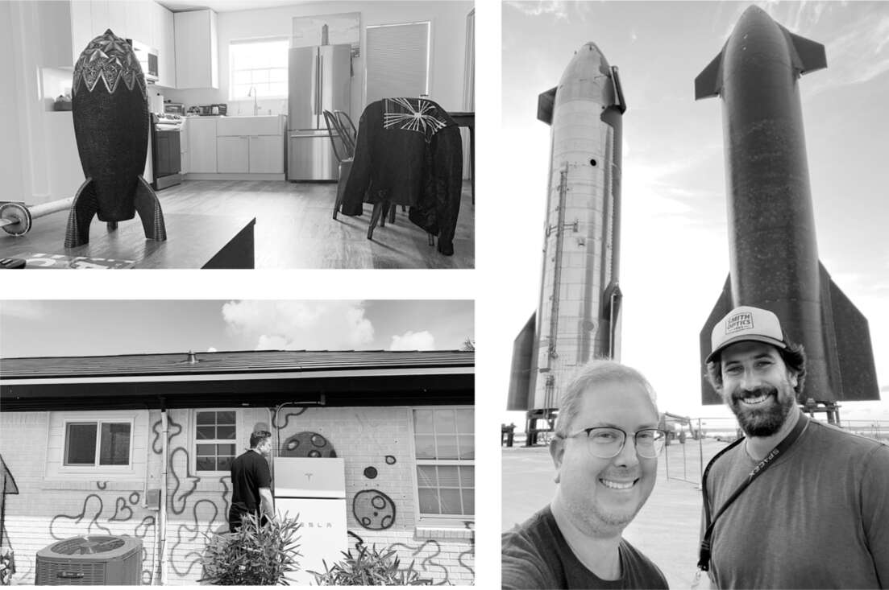

Tên lửa lớn F
Nếu mục tiêu của Musk chỉ là tạo ra một công ty tên lửa sinh lời, ông đã có thể tận hưởng thành quả và nghỉ ngơi sau khi vượt qua năm 2018. Tên lửa tái sử dụng Falcon 9 đã trở thành tên lửa hiệu quả và đáng tin cậy nhất thế giới, và ông đã phát triển vệ tinh liên lạc riêng, thứ cuối cùng sẽ mang lại nguồn doanh thu dồi dào.
Nhưng mục tiêu của ông không chỉ đơn thuần là trở thành một doanh nhân vũ trụ. Đó là đưa nhân loại lên sao Hỏa. Và điều đó không thể thực hiện được trên Falcon 9 hay phiên bản nâng cấp của nó, Falcon Heavy. Tầm bay của Falcon có hạn. "Tôi có thể kiếm được rất nhiều tiền, nhưng tôi không thể biến cuộc sống thành đa hành tinh", ông nói.
Đó là lý do tại sao vào tháng 9 năm 2017, ông tuyên bố SpaceX sẽ phát triển một tên lửa tái sử dụng lớn hơn nhiều, cao nhất và mạnh nhất từng được chế tạo. Ông đặt tên mã cho tên lửa lớn này là BFR. Một năm sau, ông đăng một tweet: "Đổi tên BFR thành Starship".
Hệ thống Starship sẽ có tầng đẩy đầu tiên và tàu vũ trụ tầng thứ hai, khi ghép lại với nhau sẽ cao 119 mét, cao hơn 50% so với Falcon 9 và cao hơn 9 mét so với tên lửa Saturn V được sử dụng trong chương trình Apollo của NASA vào những năm 1970. Được trang bị 33 động cơ đẩy, nó có khả năng phóng hơn một trăm tấn trọng tải lên quỹ đạo, gấp bốn lần Falcon 9. Và một ngày nào đó, nó sẽ có thể chở một trăm hành khách lên sao Hỏa. Ngay cả khi đang vật lộn với các nhà máy Tesla ở Nevada và Fremont, Musk vẫn dành thời gian mỗi tuần để xem xét các bản vẽ về các tiện nghi và chỗ ở mà Starship sẽ có cho hành khách trong chuyến đi chín tháng tới sao Hỏa.
Từ những ngày thơ ấu quanh quẩn trong văn phòng kỹ thuật của cha mình ở Pretoria, Musk đã có cảm nhận về các đặc tính của vật liệu xây dựng. Trong các cuộc họp của Tesla và SpaceX, ông thường tập trung vào các lựa chọn khác nhau cho cực âm và cực dương của pin, van động cơ, khung xe, cấu trúc tên lửa và thân xe bán tải. Ông có thể (và rất thường xuyên) nói dài dòng về lithium, sắt, coban, Inconel và các hợp kim niken-crom khác, vật liệu composite nhựa, các loại nhôm và hợp kim thép. Đến năm 2018, ông bắt đầu ưa chuộng một hợp kim rất phổ biến mà ông nhận ra là sẽ hoạt động tốt như nhau cho cả tên lửa lẫn Cybertruck: thép không gỉ. "Tôi và thép không gỉ nên đi tìm một căn phòng riêng ở đâu đó", ông nói đùa với nhóm của mình.
Làm việc cùng ông trong dự án Starship là một kỹ sư khiêm tốn và vui vẻ tên là Bill Riley. Anh từng là thành viên của đội đua xe nổi tiếng Cornell và đã giúp huấn luyện Mark Juncosa, người sau này đã lôi kéo anh về SpaceX. Riley và Musk kết nối với nhau nhờ niềm đam mê lịch sử quân sự - đặc biệt là không chiến trong Thế chiến I và II - và khoa học vật liệu.
Vào cuối năm 2018, họ đến thăm cơ sở sản xuất Starship, khi đó nằm gần Cảng Los Angeles, cách nhà máy và trụ sở SpaceX khoảng hai mươi lăm cây số về phía nam. Riley giải thích rằng họ đang gặp sự cố với vật liệu sợi carbon đang sử dụng. Các tấm sợi carbon bị nhăn. Ngoài ra, quy trình này còn chậm và tốn kém. "Nếu tiếp tục với sợi carbon, chúng ta sẽ thất bại," Musk nói. "Điều này đồng nghĩa với cái chết. Tôi sẽ không bao giờ đến được sao Hỏa." Các nhà thầu giá cộng thêm chi phí thì không nghĩ như vậy.
Musk biết rằng những tên lửa Atlas đời đầu, vào đầu những năm 1960 đã đưa bốn người Mỹ đầu tiên vào quỹ đạo, được làm bằng thép không gỉ, và ông đã quyết định sử dụng vật liệu đó cho thân xe Cybertruck. Cuối buổi tham quan cơ sở, ông trở nên im lặng và nhìn chằm chằm vào những con tàu đang vào cảng. "Mọi người, chúng ta phải thay đổi hướng đi," ông nói. "Chúng ta sẽ không bao giờ chế tạo tên lửa đủ nhanh với quy trình này. Thép không gỉ thì sao?"
Ban đầu, có sự phản đối, thậm chí là một chút hoài nghi. Khi gặp gỡ nhóm điều hành trong phòng họp tại SpaceX vài ngày sau đó, họ lập luận rằng một tên lửa bằng thép không gỉ có thể sẽ nặng hơn tên lửa được chế tạo bằng sợi carbon hoặc hợp kim nhôm-lithium được sử dụng cho Falcon 9. Trực giác của Musk mách bảo điều ngược lại. "Hãy tính toán," ông nói với nhóm. "Hãy tính toán." Khi họ làm như vậy, họ xác định rằng thép thực sự có thể nhẹ hơn trong điều kiện mà Starship sẽ phải đối mặt. Ở nhiệt độ rất lạnh, độ bền của thép không gỉ tăng 50%, nghĩa là nó sẽ chắc chắn hơn khi chứa nhiên liệu oxy và nitơ lỏng siêu lạnh.
Thêm vào đó, điểm nóng chảy cao của thép không gỉ sẽ loại bỏ sự cần thiết của tấm chắn nhiệt ở mặt hướng ra ngoài không gian của Starship, giúp giảm trọng lượng tổng thể của tên lửa. Một ưu điểm cuối cùng là việc hàn các mảnh thép không gỉ lại với nhau rất đơn giản. Hợp kim nhôm-lithium của Falcon 9 yêu cầu một quy trình gọi là hàn khuấy, cần được thực hiện trong môi trường cực kỳ sạch sẽ. Nhưng thép không gỉ có thể được hàn trong các lều lớn hoặc thậm chí ngoài trời, giúp dễ dàng thực hiện ở Texas hoặc Florida, gần các địa điểm phóng. "Với thép không gỉ, bạn có thể hút xì gà bên cạnh khi hàn," Musk nói.
Việc chuyển sang thép không gỉ cho phép SpaceX thuê những người thợ xây dựng mà không cần chuyên môn đặc biệt về chế tạo sợi carbon. Tại địa điểm thử nghiệm động cơ ở McGregor, Texas, họ đã ký hợp đồng với một công ty lắp đặt tháp nước bằng thép không gỉ. Musk bảo Riley liên hệ với họ để được giúp đỡ. Một câu hỏi đặt ra là độ dày thành của Starship nên là bao nhiêu. Musk đã nói chuyện với một số công nhân - những người thực sự làm công việc hàn chứ không phải giám đốc điều hành của công ty - và hỏi họ nghĩ độ dày nào là an toàn. "Một trong những quy tắc của Elon là 'Hãy tìm đến nguồn thông tin gần nhất có thể'," Riley nói. Các công nhân dây chuyền cho biết họ nghĩ thành bể có thể mỏng tới 4,8 mm. "Còn bốn thì sao?" Musk hỏi.
"Điều đó sẽ khiến chúng tôi khá lo lắng," một trong những công nhân trả lời.
"Được rồi," Musk nói, "hãy làm bốn milimét. Hãy thử xem."
Nó đã hoạt động.
Chỉ trong vài tháng, họ đã có một nguyên mẫu, được gọi là Starhopper, sẵn sàng để thử nghiệm các cú nhảy ở độ cao thấp. Nó có ba chân có thể thu vào, được thiết kế để kiểm tra xem Starship có thể hạ cánh an toàn sau chuyến bay và được tái sử dụng như thế nào. Đến tháng 7 năm 2019, nó đã thực hiện các cú nhảy thử nghiệm ở độ cao 24 mét.
Musk rất hài lòng với ý tưởng về Starship đến nỗi một buổi chiều, trong một cuộc họp tại phòng hội nghị của SpaceX, ông đã đột ngột quyết định triển khai chiến lược "đốt thuyền". Ông ra lệnh hủy bỏ Falcon Heavy. Các giám đốc điều hành trong phòng đã nhắn tin cho Gwynne Shotwell về những gì đang xảy ra. Cô vội vã rời khỏi chỗ ngồi, ngồi phịch xuống ghế và nói với Musk rằng ông không thể làm điều đó. Falcon Heavy, với ba lõi tên lửa đẩy, là chìa khóa để thực hiện các hợp đồng với quân đội để phóng các vệ tinh tình báo lớn. Cô có đủ thẩm quyền để phản đối quyết định này. "Sau khi tôi giải thích rõ tình hình cho Elon, anh ấy đã đồng ý rằng chúng tôi không thể làm những gì anh ấy muốn", cô nói. Một vấn đề của Musk là hầu hết mọi người xung quanh đều e ngại làm điều đó.
Boca Chica, ở mũi cực nam của Texas, là một phiên bản hoang sơ của thiên đường. Cồn cát và bãi biển của nó thiếu đi vẻ lấp lánh của đảo Padre, một khu nghỉ dưỡng ngay trên bờ biển, nhưng các khu bảo tồn động vật hoang dã xung quanh biến nó thành một nơi an toàn để phóng tên lửa. Năm 2014, SpaceX đã xây dựng một bệ phóng thô sơ ở đó như một phương án dự phòng cho Cape Canaveral và Vandenberg, nhưng nó chủ yếu bị bỏ hoang cho đến năm 2018, khi Musk quyết định biến nó thành căn cứ chuyên dụng cho Starship.
Vì Starship quá lớn, nên việc chế tạo nó ở Los Angeles và vận chuyển đến Boca Chica là không hợp lý. Vì vậy, Musk quyết định họ nên xây dựng một khu vực sản xuất tên lửa cách bệ phóng khoảng ba km giữa vùng đất khô cằn và vùng đất ngập nước đầy muỗi của Boca Chica. Đội ngũ SpaceX đã dựng ba lều khổng lồ giống như nhà chứa máy bay cho các dây chuyền lắp ráp và ba "khu vực cao" làm bằng kim loại tấm có thể chứa các Starship theo chiều dọc. Một tòa nhà cũ trong khuôn viên đã được tân trang lại với các phòng làm việc, phòng hội nghị và một căng tin với đồ ăn tạm được và cà phê tuyệt vời. Đến đầu năm 2020, đã có năm trăm kỹ sư và công nhân xây dựng, khoảng một nửa trong số họ đến từ địa phương, làm việc theo ca suốt ngày đêm.
"Cô cần đến Boca Chica và làm bất cứ điều gì có thể để biến nơi này trở nên tuyệt vời", ông nói với Elissa Butterfield, khi đó là trợ lý của ông. "Tương lai của sự tiến bộ của nhân loại trong không gian phụ thuộc vào điều đó." Các nhà nghỉ gần nhất nằm ở Brownsville, cách đó 37 km, vì vậy Butterfield đã tạo ra một khu nhà di động Airstream làm nơi ở, với những cây cọ từ Home Depot, một quầy bar tiki và một sàn gỗ có hố lửa. Sam Patel, giám đốc cơ sở vật chất trẻ tuổi đầy nhiệt huyết, đã thuê máy bay không người lái và máy phun thuốc trừ sâu để cố gắng kiểm soát muỗi. "Không thể đến sao Hỏa nếu bị côn trùng ăn thịt trước", Musk nói.
Musk tập trung vào bố trí và hoạt động của các lều nhà máy, suy nghĩ về cách sắp xếp dây chuyền lắp ráp. Cuối năm 2019, trong một chuyến thăm, ông cảm thấy thất vọng vì tiến độ chậm chạp. Đội ngũ vẫn chưa chế tạo được một mái v cupola nào khớp hoàn hảo với Starship. Đứng trước một trong những cái lều, ông đưa ra một thách thức: chế tạo một mái vòm trước bình minh. Ông được cho biết điều đó là không khả thi, vì họ không có thiết bị để hiệu chỉnh kích thước chính xác. "Chúng ta sẽ làm một mái vòm trước bình minh dù có phải chết," ông khăng khăng. Ông ra lệnh cắt bỏ phần cuối của thân tên lửa và sử dụng nó làm công cụ lắp ráp. Họ đã làm như vậy, và ông thức cùng đội bốn kỹ sư và thợ hàn cho đến khi mái vòm hoàn thành. "Thực ra chúng tôi đã không có mái vòm trước bình minh," Jim Vo, một thành viên trong nhóm, thừa nhận. "Chúng tôi mất đến khoảng chín giờ sáng."
Cách cơ sở SpaceX khoảng một dặm là một khu nhà ở gồm ba mươi mốt căn nhà được xây dựng từ những năm 1960, một số là nhà lắp ghép, nằm trên hai con đường thưa thớt. SpaceX đã mua được hầu hết trong số đó, với giá gấp ba lần giá trị được đánh giá, mặc dù một số chủ sở hữu vẫn không chịu bán, vì bảo thủ hoặc vì thích thú khi sống cạnh bãi phóng.
Musk chọn cho mình một căn nhà hai phòng ngủ. Nó có một phòng khách chính không gian mở, với tường trắng và sàn gỗ sáng màu, kết hợp phòng khách, khu vực ăn uống và nhà bếp. Một chiếc bàn gỗ nhỏ dùng làm bàn làm việc của ông. Bên dưới là hộp Wi-Fi được kết nối với ăng-ten Starlink. Quầy bếp bằng Formica trắng, và thứ duy nhất nổi bật là tủ lạnh cỡ công nghiệp, chứa đầy Diet Coke không caffeine. Tranh treo tường mang phong cách ký túc xá thời xưa, bao gồm áp phích bìa tạp chí Amazing Stories. Trên bàn cà phê là tập ba lịch sử Thế chiến II của Winston Churchill, cuốn Our Dumb Century của tờ Onion, bộ truyện Foundation của Isaac Asimov và một album ảnh do Saturday Night Live chuẩn bị về lần xuất hiện của ông vào tháng 5 năm 2021. Một căn phòng nhỏ liền kề có máy chạy bộ, thứ mà ông không sử dụng nhiều.
Sân sau có bãi cỏ lởm chởm và một vài cây cọ, mặc dù là cây cọ, nhưng vẫn héo úa trong cái nóng tháng Tám. Bức tường gạch trắng phía sau được bao phủ bởi những bức vẽ graffiti nguệch ngoạc do Grimes vẽ, với những trái tim đỏ và những đám mây với bong bóng kiểu emoji màu xanh lam. Mái nhà lợp ngói năng lượng mặt trời được kết nối với hai bộ Tesla Powerwall lớn. Một nhà kho ở sân sau đôi khi được Grimes sử dụng làm xưởng hoặc Maye Musk làm phòng ngủ.
Từ "khiêm tốn" vẫn chưa đủ để miêu tả nơi ở chính của một tỷ phú. Nhưng Musk thấy đó là một thiên đường. Sau những cuộc họp dài tại Starbase hoặc những chuyến tham quan căng thẳng đến dây chuyền lắp ráp tên lửa, ông tự lái xe về đó và cơ thể được thư giãn khi ông đi loanh quanh trong nhà, huýt sáo như một ông bố vùng ngoại ô.

Phòng khách và sân sau của Musk ở Boca Chica; Bill Riley và Mark Juncosa